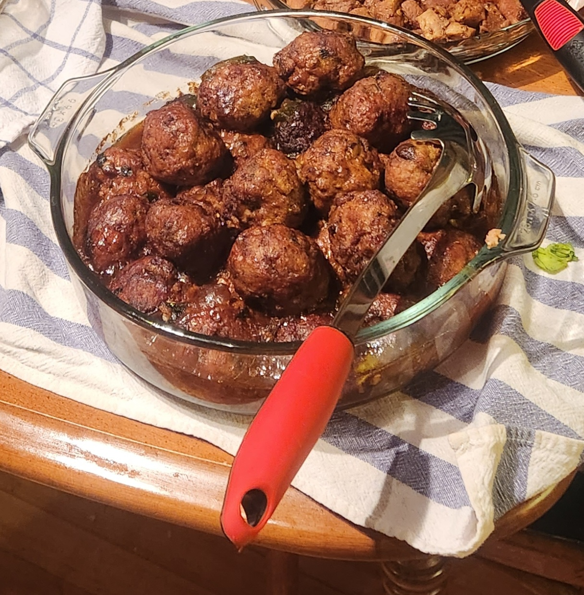

Lion's Head Meatballs

Description
Ingredients:
- 1 lb ground pork
- 1 slice of ginger
- 1 scallion
- 1 large egg
- 3 tblsp plain breadcrumbs
- 1 tblsp Shaoxing wine
- 1 tblsp soy sauce
- 1 tblsp oyster sauce
- 1/2 tsp white pepper
- 1/4 tsp five spice powder
- 1 1/2 tsp cornstarch
- 1/4 cup water
Steps:
- Transfer the ground pork to a large mixing bowl. Add the minced ginger and scallions, egg, breadcrumbs, Shaoxing wine,
light soy sauce, oyster sauce, white pepper, five spice powder, cornstarch, and water.
- Whip everything in one direction for about 10 minutes, until the meat mixture resembles a paste.
- Heat enough oil to submerge the meatballs in a small, deep pot (a small pot requires less oil) to 350 degrees F/175 degrees C.
Just be sure there’s enough oil to cook the meatballs evenly, but that the oil will not overflow during frying.
- With oiled hands, divide the meat mixture into 8 to 9 equal portions and shape each into a ball. Carefully lower the meatballs one at a time into the heated oil, and fry in batches (2 minutes per batch)
until they’re evenly golden brown. Remove the par-cooked meatballs with a slotted spoon and set aside.
- Cook thoroughly in sauce of choice.